01 · IMAGE
生命智慧圖卡
以圖像整理本章最重要的生命提醒，適合慢慢閱讀與分享。
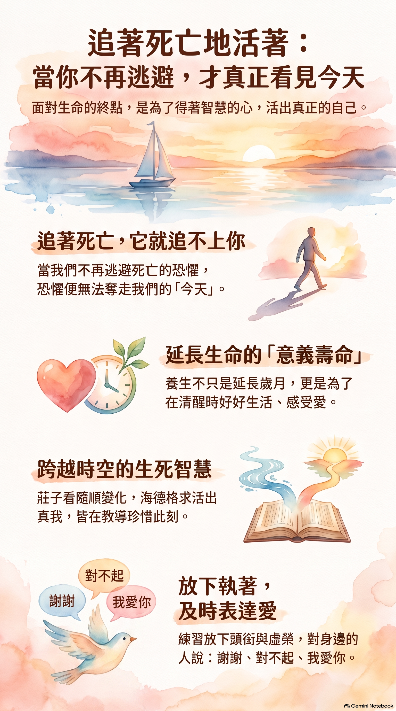
SOUL HEALING SERIES · CHAPTER 521
當你不再逃避死亡，才真正看見今天
不是追上死亡，而是不讓死亡的恐懼，提前奪走我們的今天。
ORIGINAL WORDS · ONLINE READING
已採用排版修正版；請向下捲動閱讀完整 5 頁內容。
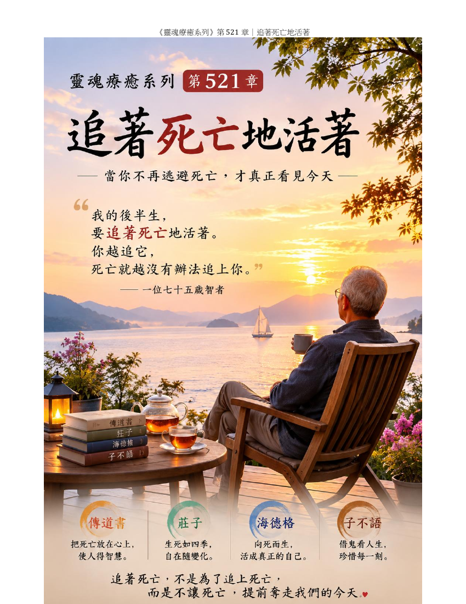
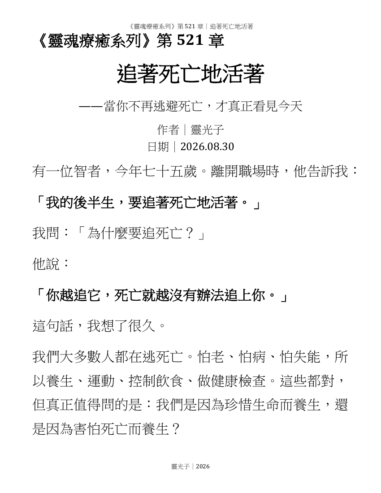
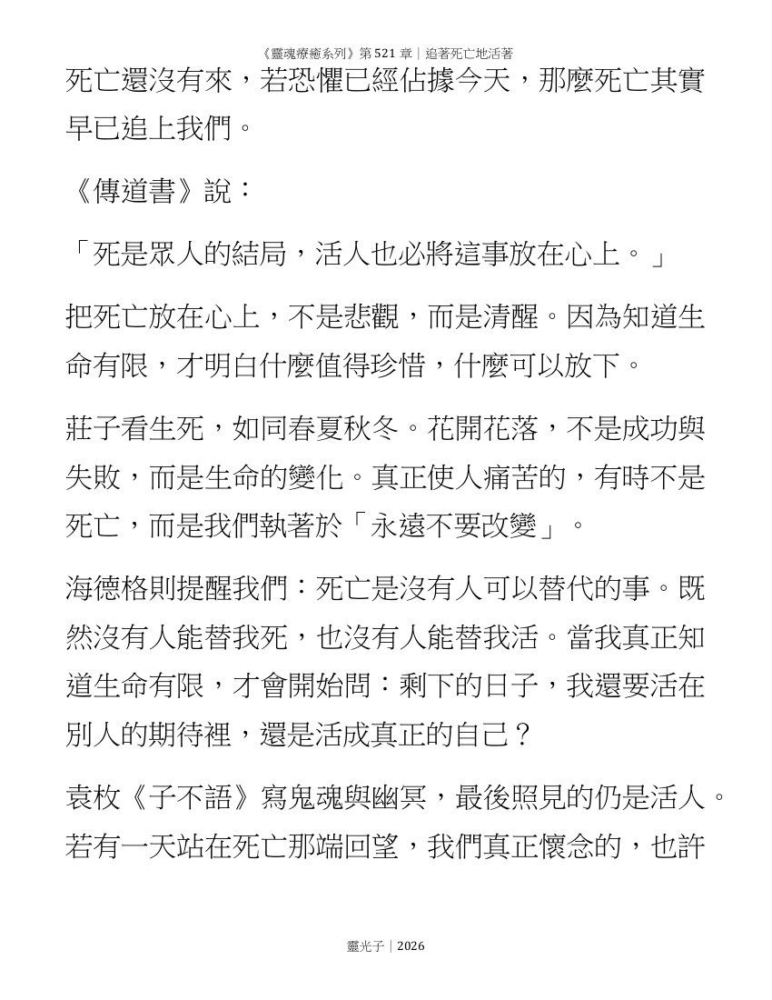
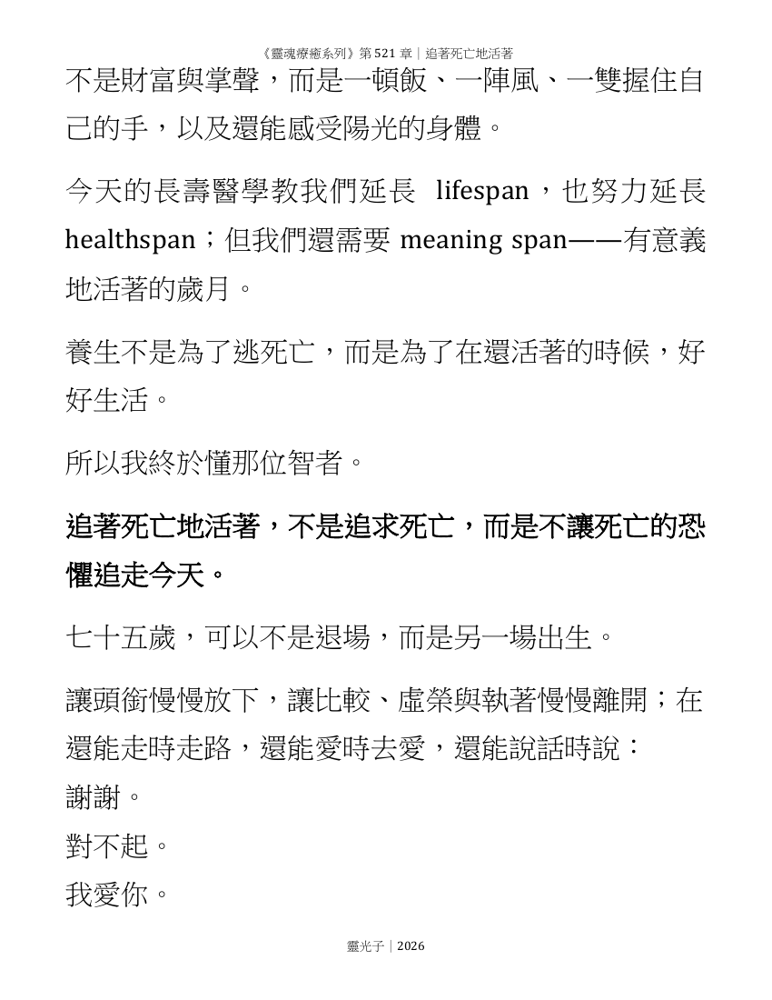
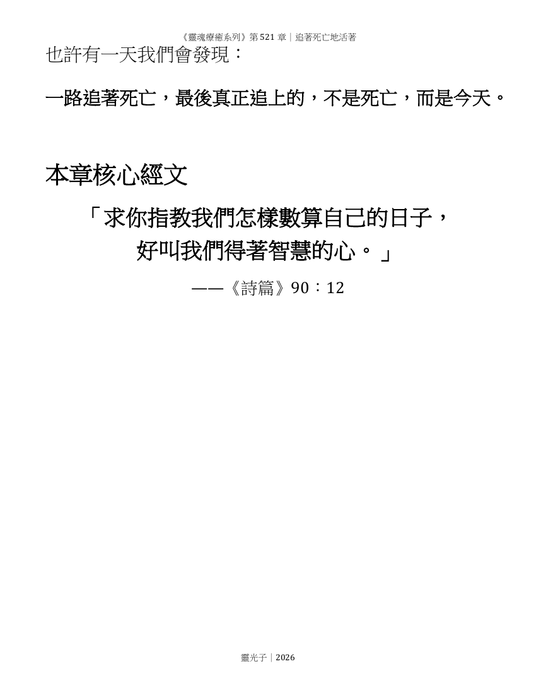
MUSIC
聆聽〈看見真正的今天〉，讓文字的提醒，在旋律中慢慢沉澱。
ORIGINAL SONG
播放後，左下角會出現固定控制列；前往其他段落時，仍可隨時暫停或停止。
REFINED READING
依序由圖卡、全文與聲音進入本章；全程都留在同一頁閱讀。
01 · IMAGE
以圖像整理本章最重要的生命提醒，適合慢慢閱讀與分享。

02 · FULL TEXT
完整內容已逐頁置於網站中，向下捲動即可閱讀全部 15 頁。
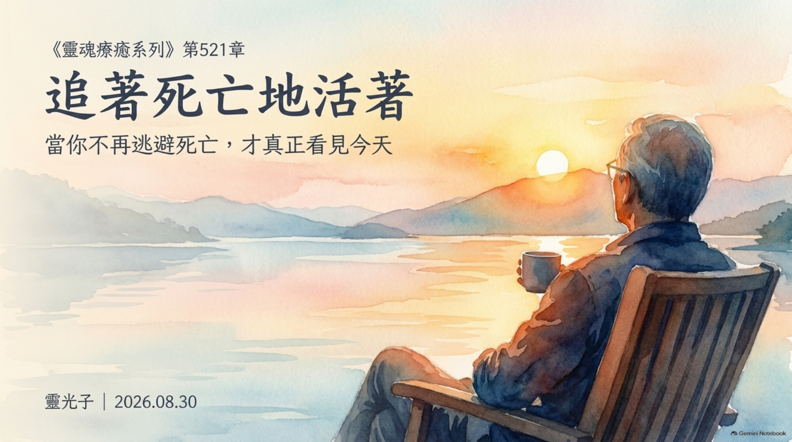
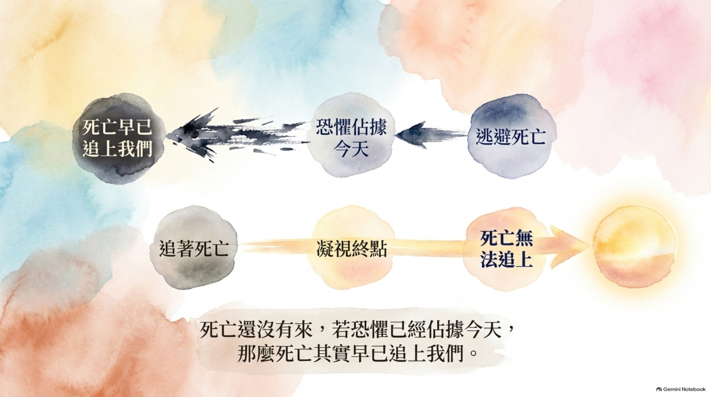
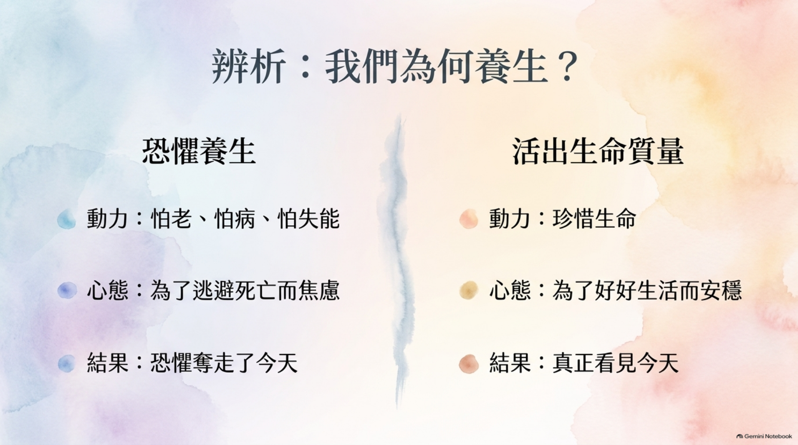
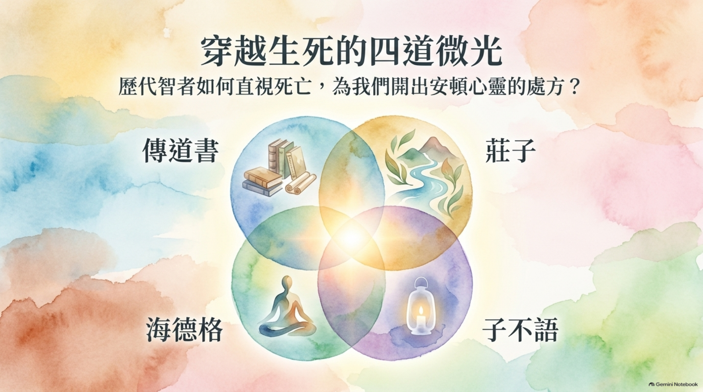
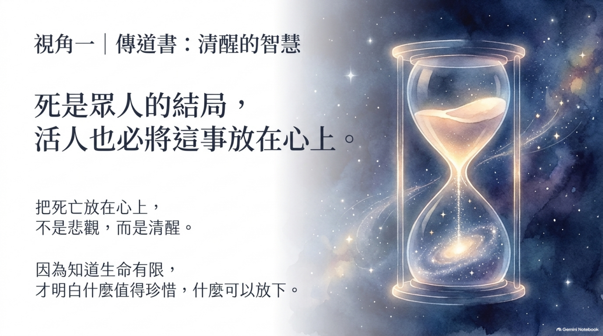
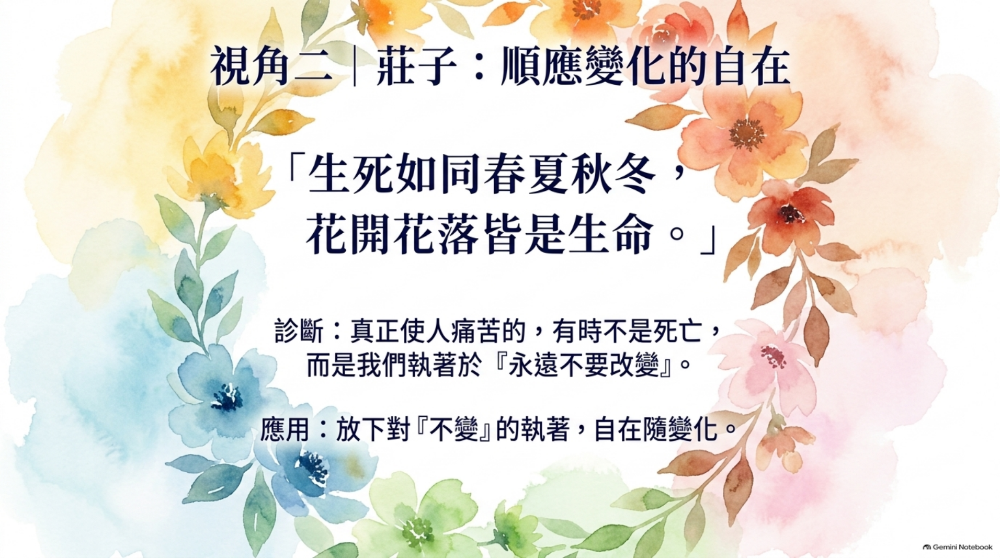
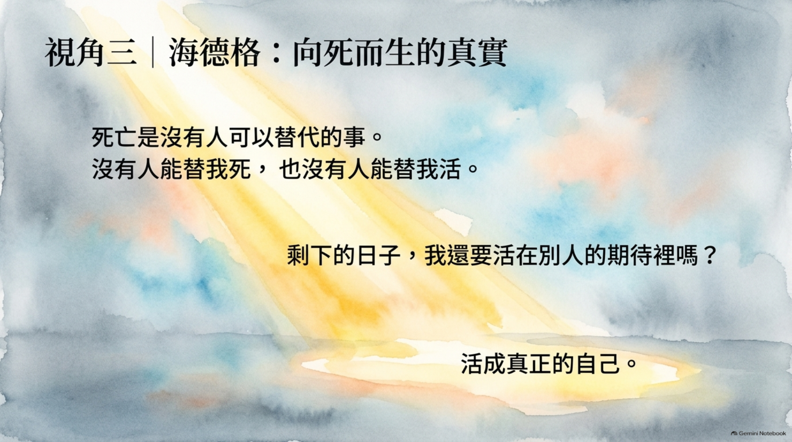
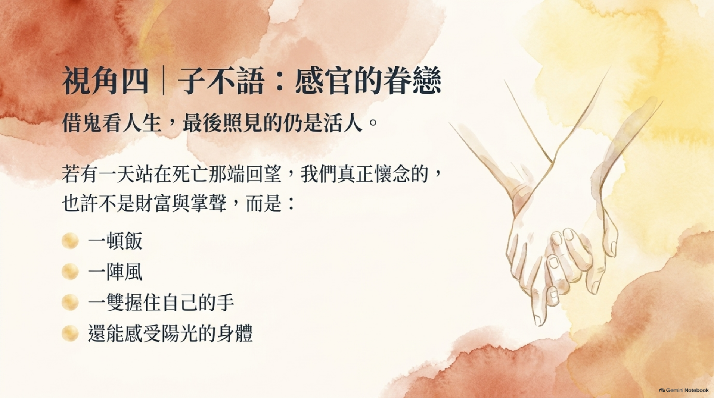
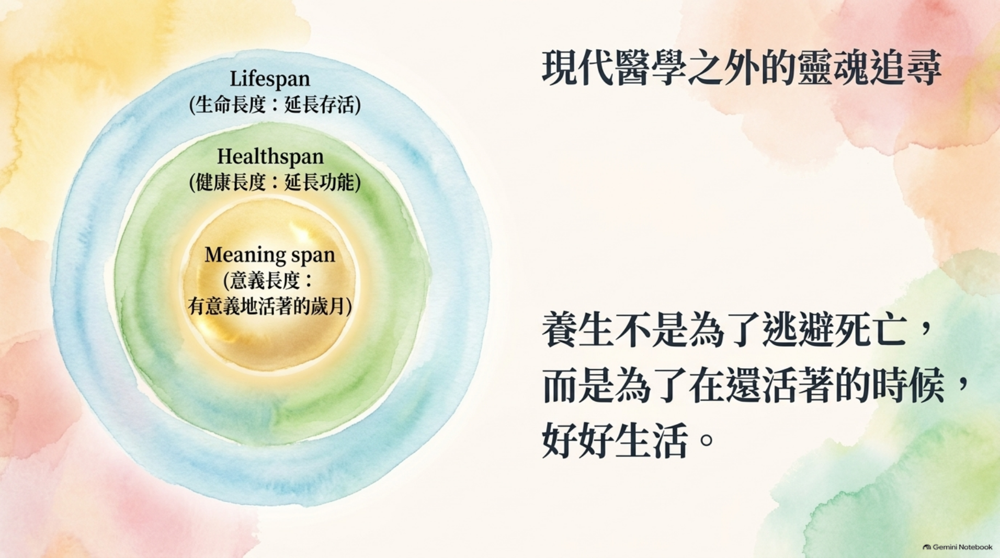
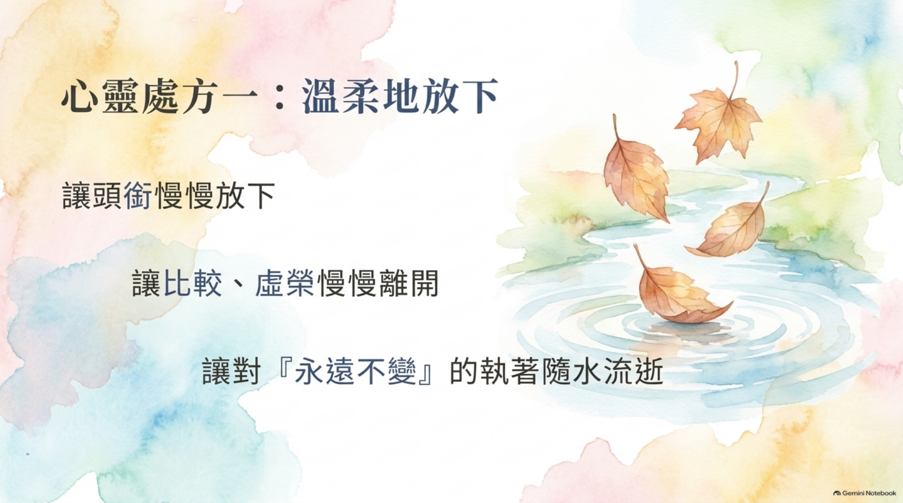

03 · AUDIO
以聲音陪伴你回到當下，把這一章的提醒帶入日常。
把死亡放在心上，使人更清醒地珍惜生命。
生死如四季，在變化之中學會安然。
生命有限，因此更有勇氣活成真正的自己。
回望人生，珍惜的往往是一頓飯、一陣風與一束陽光。
A SMALL PRACTICE FOR TODAY
問問自己：若今天值得好好活，我想對誰說謝謝、對誰說對不起，或把哪一件放不下的事先輕輕放下？